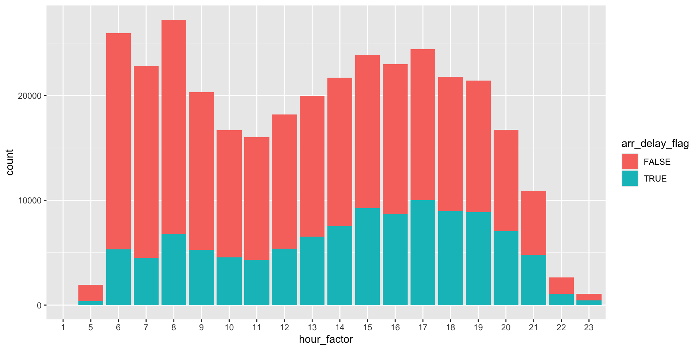

Fall 2023 Weekly Updates
2023-08-30
This Week
Week 12 Agenda
- Check-in on difficult + interesting things
- Exercise 2 and 4 solutions review (forgot this last week)
- Lecture: Reading and writing spatial data with R (continued)
- Spatial metadata
Check-in on interesting things
Check-in on difficult things
- I’m still not sure I understand the differences between and advantages/disadvantages of using GeoJson, shapefiles, sf objects, or KML files.
Questions
Do people actually create data dictionaries within R?
How can we combine layers when making a map with {ggplot2}?
What is the difference between {ggplot2} and {ggspatial} packages? What makes one special over the other?
Week 14: November 29, 2023
- Scheduling
- Final project check-in
- Lecture + discussion for spatial metadata
Week 12 Agenda
- Check-in on difficult + interesting things
- Exercise 2 and 4 solutions review (forgot this last week)
- Lecture: Reading and writing spatial data with R (continued)
- Spatial metadata
Check-in on interesting things
Check-in on difficult things
- I’m still not sure I understand the differences between and advantages/disadvantages of using GeoJson, shapefiles, sf objects, or KML files.
Questions
Do people actually create data dictionaries within R?
How can we combine layers when making a map with {ggplot2}?
What is the difference between {ggplot2} and {ggspatial} packages? What makes one special over the other?
Week 11 Agenda
- Questions about the final project
- Check-in on difficult + interesting things
- Exercise 2 and 4 review
- Lecture + practice: Editing OpenStreetMap and exploring OpenStreetMap data with the
{osmdata}package - Lecture + practice: Reading and writing spatial data with R
Final project questions
- Can my proposal include a description of available data, even if I might not use it?
- Do you have any example project presentations to share?
- How do you determine the appropriate geographical scale for a project? e.g. county, tract, zip codes?
Check-in on interesting things
- “OpenStreetMap has so much cool stuff”
Check-in on interesting things

Day 7 map of the 30DayMapChallenge from Andy Woodruff
Check-in on difficult things
- “I am still getting used to working with long data formats instead of wider formats. I think what I am finding the most difficult is switching between the two from when I work in ArcGIS Pro and RStudio.”
Week 10 Agenda
- Check-in on difficult + interesting things
- Errors of the week
- Lecture + practice: Editing OpenStreetMap and exploring OpenStreetMap data with the
{osmdata}package - Lecture + practice: Exploring American Community Survey data with the
{tidycensus}package - Weekly questions
Check-in on difficult things
This week’s difficult things:
- Issues getting Quarto documents to knit
- Challenge thinking of novel functions (when do I write a function?)
Check-in on interesting things
tigris::shift_geometry(): “It is cool that it can show geographically distant places in one map in a way that makes sense.”- “I found it interesting that people hate YAML.”
- The the ggplot2 book chapter on Maps “was really helpful for me to make the labeled maps and think of all the different ways we need to treat polygons when map making”
- “I don’t think I realized how much [OpenStreetMap] relies on contributors.”
Check-in on interesting things
I explored the OpenStreetMap this week, and it was amazing. I even located my parish back in India, which was surprisingly not labeled, and added it to the map. I officially contributed to OpenStreetMap!
Questions about the final project
- Is it OK to do exploratory data analysis that combines multiple data sets with only limited maps?
- What should the overall split of documentation to coding be on the final project?
- How deeply should we be looking into the real-life implications of our data and our results?
Week 9 Agenda
- Check-in on difficult + interesting things
- Errors of the week
- Lecture + practice (continued): Exploratory data analysis with
{sf}and the tidyverse - Lecture + practice: Editing OpenStreetMap and exploring OpenStreetMap data with the
{osmdata}package - Weekly questions
Check-in
This week’s difficult things:
- Issues getting Quarto documents to knit
- Challenge thinking of novel functions (when do I write a function?)
This week’s interesting things:
- …
Errors for the week
ERROR: YAMLException: bad indentation of a mapping entry (_quarto.yml, 10:7)
Take a look at the Quarto configuration options for website navigation for more information.
###Lecture
🖥️ Editing OpenStreetMap and exploring OpenStreetMap data with the {osmdata} package
Week 8 Agenda
- Check-in on difficult + interesting things
- Feedback on course experience (things to change, add, or keep)
- Errors of the week
- Lecture + practice: Exploratory data analysis with
{sf}and the tidyverse - Weekly questions
Check-in
This week’s difficult things:
- Quarto can be confusing
- Writing functions is hard
- Naming functions is even harder
This week’s interesting things:
- Functions can be a powerful tool
- Quarto has an exciting level of flexibility
Course feedback from you (and me)
Things to change:
- Start with slides + code demonstration (saving the check-ins + questions for the end)
- Try a remote session where students can screen share, see and understand each other’s work, and receive help on our code
- Share more feedback on completed exercises*
Course feedback from you (and me)
Things to add:
- Distributing slides in advance of class and spend class time on coding exercises and trouble-shooting
- Spend more time on how to make maps with
{sf},{ggplot2}, and R - Share exercise solutions for review*
Course feedback from you (and me)
Things to keep the same:
- Exercises that include debugging a code snippet
- Sharing good questions for weekly check-ins*
Errors for the week
IllegalArgumentException: Points of LinearRing do not form a closed linestring
Take a look at sf::st_is_valid() and sf::st_make_valid().
Errors for the week
Error in UseMethod("mutate") : no applicable method for 'mutate' applied to an object of class "function"
Always double-check your inputs and outputs! When an error tells you it has no applicable method for a specific input—you may be passing a different object than you think you are.
Lecture
Questions on tidy data
After you tidy data, where or how do you start looking in order to make sense of it?
Questions on Quarto
Why did Quarto render a bunch of figures from the quarto md files of exercises due in previous weeks?
How do you duplicate of a Quarto document?
Questions on functions
Is there a way to embed a function within one another?
Yes! You can define a function within a function like this:
You can also use anonymous functions and shortcuts (especially inside of tidyverse functions that translate the “tilde” formula style notation into a function):
Is there any set of naming convention for functions that most people use?
Use what the function does as a guide.
Try an object_verb() naming scheme for functions take a common data type or interact with a common API where object refers to the data/API and verb the primary action. (see the Function and argument recommendations in thePackaging Guide section of the rOpenSci Packages book)
For example:
- stringi, functions starting with
stri_manipulate strings (stri_join(),stri_sort() - googlesheets functions starting with
gs_are calls to the Google Sheets APIgs_auth(),gs_user(),gs_download()
When creating a function is there a way to save it to your R project so if you were to start a new script document you can still use the function?
How do we create a data frame and store the output from a function in a data frame?
What are the advantages of using return() over using nested logic (e.g. if (...) { } else { }) when writing functions?
How do we determine these thresholds for other variables in different datasets?
If the list of our arguments/inputs are column values from a data frame, how do we call the entire list of our arguments/inputs from that data frame after the function executes?
Week 7: October 11, 2023
These past updates are in reverse chronological order.
Due this week
- Exercise 6 is due this Friday!
- Readings on scripts, functions, and Quarto.
Due next week
- Make a mapping function and use it in a Quarto document!
Your interesting things!
The reasoning behind why sometimes you can use pipes and sometimes not finally clicked with me! I had been trying to use pipes for everything and didn’t understand why it wasn’t working – getting that down was really helpful.
I have found that it super interesting to determine how to tidy data, like taking the time to make logical sense of the data is great but this also leads to what I find most difficult.
I really enjoyed the independence of going out and located are own data and being able to manipulate it in R. Feels like the first step into the real world.
Joining is just so much easier in R as opposed to ArcGIS or QGIS.
Your difficult things
One of the most challenging concepts or topics for me from all the syllabus covered till now is the st_() functions.
There are a lot of geometry operations and each has a different set of parameters and features, which are mostly confusing.
Your questions
Trouble-shooting code questions
Why does plot() make 6 maps instead of 1?
Why does this not work?
What is stringr::str_flatten() doing?
str_flatten() reduces a character vector to a single string.
This is a summary function because regardless of the length of the input x, it always returns a single string.
Questions about finding and citing data
Is there a large list or repository of good places to find data or is it more of a treasure hunt?
Here is a big list of possible data sources including local and national data sources and a set of R packages focused on data access. Many libraries create similar resources for students and researchers to use and some libraries have geospatial data specialists who can assist you in a search.
There are also a wide variety of scientific data repositories that are typically specific to a domain of research, community of practice, or institution. For example, take a look at this NIH directory of 130+ data respositories or the Environmental Data Initiative (EDI) repository used by the long-running Baltimore Ecosystem Study.
Are there more sources for untidy data? Are there any purposely untidy to be used for tidying practice?
It turns out there is a package dedicated to sharing a selection of untidy datasets!
{tidyr} also comes with a set of tiny practice datasets (table1, table2, table3, table4a, table4b, table5) for practicing these skills. These slides from Data Science in a Box or the accompanying video are good resources to review the basics of using the pivot_ and separate_ function families to change the strcture of your data.
What is the best approach for proper citation and credit for data if there is no metadata and it is not clear who created it?
Create a citation with as much information as you have available using a citation manager such as Zotero. But, also reflect: if you don’t know who created the data or how they created the data, should you be using the data?
Questions about data formats
What are the advantages or disadvantages of working with CSV files vs. GeoJSON files vs. other file types?
How do I access data using a Feature Service URL?
Questions about working with Quarto
Can use the RStudio debugging tools for code blocks in a .qmd file (Quarto document)?
Not really. You could keep your code in one or more R scripts that you can then source into your Quarto document. Or you could extract your code chunks into a R script using the knitr::purl() function (for de-bugging purposes only or to use as a source for the document).
What is the keyboard shortcut to delete empty code chunks?
It doesn’t exist (although it was proposed via GitHub issue back in November 2021). You could probably create one using the {shrtcts} package or by creating a custom RStudio Addin.
Week 6: October 4, 2023
Weekly questions
Geometric and spatial operations
While the concept of a buffer is rather easy to understand for me in other spatial software such as ArcGIS Pro, it was difficult for me to manipulate in R.
Simple feature collection with 655 features and 3 fields
Geometry type: LINESTRING
Dimension: XY
Bounding box: xmin: -136.9 ymin: 7 xmax: 13.5 ymax: 70.7
Geodetic CRS: WGS 84
# A tibble: 655 × 4
# Groups: year [48]
year name avg_wind geometry
<dbl> <chr> <dbl> <LINESTRING [°]>
1 1975 Amy 46.5 (-48 47, -51.6 44.5, -54.8 42.5, -58 40.5, -78 33.3,…
2 1975 Blanche 45 (-65.2 44, -62.4 47.2, -74.6 32.2, -75 31, -74.9 29.…
3 1975 Caroline 38.9 (-90.1 22.8, -91 22.9, -91.9 23, -92.6 23.1, -93.6 2…
4 1975 Doris 67.1 (-44.6 34.5, -44.9 34.6, -44 35.4, -44 34.9, -44.2 3…
5 1975 Eloise 45 (-81.5 37.5, -82.5 37, -83.5 36.5, -84.3 35.5, -85.7…
6 1975 Faye 68.4 (-46 42.8, -40 42.9, -52 42.3, -57.1 41, -63.7 38.4,…
7 1975 Gladys 66.3 (-36.7 11, -35.8 10.6, -34.8 10.3, -37.4 11.4, -38.2…
8 1975 Hallie 34.6 (-79.4 29.4, -79.7 30, -79.8 30.2, -79.9 30.5, -80.1…
9 1976 Belle 68.1 (-75.2 32.5, -75.3 30.9, -75.3 29.5, -75.1 28.1, -73…
10 1976 Candice 49.5 (-51.2 44.4, -56.4 41.3, -59 41, -59.3 41.2, -68.2 3…
# ℹ 645 more rowsWhat do I mean by “states that intersect Maryland”?
How do you create the map (straight line between MD and CA) using ggplot instead of plot?
Assorted questions
How can I streamline my workflow?
Tidy data questions
Are most built in datasets in R already tidy?
Can functions from the {units} work with any type of variable?
When might you use both tidyr::pivot_longer() and tidyr::pivot_wider()?
What is the purpose of the .value parameter used in names_to attribute of pivot_longer() function?
How does tidyr::pivot_wider() handle cases with conflicting or duplicate values when pivoting?
Week 5: September 27, 2023
Your questions
How do I get my own shapefiles into R?
Is there a “best” way to perform specific operations? Or does it depend on individual preference?
There isn’t a “best” way but there are often better and worse ways. If you have more than one way to achieve the same objective in R, you can compare the approaches using a few related considerations:
- Performance (speed and memory)
- Code readability
- Consistency and predictability
This presentation on Styling R Code from Jacob Scott is one of the best resources I’ve seen on the topic.
A few related resources:
{lintr}flags when it detects problems in your code.{styler}can help automatically reformat your code.- Documentation like the tidyverse style guide can inform how you write code.
How can you keep track of what is happening when piping data from one function to another?
The {tidylog} package is one tool for getting more insight into your pipelines:
Error in library(tidylog, warn.conflicts = FALSE): there is no package called 'tidylog' mpg cyl new_var
Datsun 710 22.8 4 5.382400
Merc 240D 24.4 4 10.176100
Merc 230 22.8 4 9.922500
Fiat 128 32.4 4 4.840000
Honda Civic 30.4 4 2.608225
Toyota Corolla 33.9 4 3.367225
Toyota Corona 21.5 4 6.076225
Fiat X1-9 27.3 4 3.744225
Porsche 914-2 26.0 4 4.579600
Lotus Europa 30.4 4 2.289169
Volvo 142E 21.4 4 7.728400Another is {ViewPipeSteps}
The debugging tools built into R and RStudio can also be useful for trouble-shooting in case of errors or unexpected results.
What is the difference between an intensive and extensive variable?
The concept of intensive or extensive variables comes to the world of spatial data from physics and chemistry. The Wikipedia article on intensive and extensive properties provides helpful definitions:
an intensive property or intensive quantity is one whose magnitude is independent of the size of the system (e.g. temperature, hardness)
an extensive property or extensive quantity is one whose magnitude is additive for subsystems (e.g. mass, volume)
What is due next week
Your weekly check-in response!
What is due next week
Readings:
Ch. 6 Data tidying in Hadley Wickham, Garrett Grolemund, and Mine Çetinkaya-Rundel R for Data Science: Import, Tidy, Transform, Visualize, and Model Data, 2nd edition (WIP). (Sebastopol, CA: O'Reilly Media, 2023), https://r4ds.hadley.nz/.
Ch. 20 Joins in Wickham, Grolemund, and Çetinkaya-Rundel R for Data Science.
Karl W. Broman and Kara H. Woo "Data Organization in Spreadsheets," The American Statistician 72, no. 1 (January 2, 2018): 2–10, doi:10.1080/00031305.2017.1375989.
Week 4: September 20, 2023
Your questions
How to filter multiple rows from a column?
It all depends on the tests or conditions you pass to filter(). Review the reading on the filter function or check out this optional section of R for Data Science on boolean operations with strings.
How do you set {tidyselect} helpers to be case insensitive?
Check out the documentation! Look for the ignore.case parameter.
“I would love to run through the code for this bar graph in class, since I don’t totally understand what thought process to use to come up with it.”
Interesting things
We all love filter()! We also appreciate distinct()
“I have been working with R for a while now, in classes and for my own research. The lecture this week and the exercise really helped me understand the application of all the tools to transform data, which was super interesting because I often end up doing selections and filters in ArcGIS Pro or in a csv.”
Difficult things
Answering this question: Which carrier has the worst average delays? Challenge: can you disentangle the effects of bad airports vs. bad carriers? Why/why not?
# flights |>
# replace_na(
# replace = list(
# arr_delay = 0,
# dep_delay = 0
# )
# ) |>
# summarise(
# n_flights = n(),
# n_delay_flights = sum(n > dep_delay),
# mean_arr_delay = mean(arr_delay),
# mean_dep_delay = mean(dep_delay),
# mean_total_delay = mean(arr_delay + dep_delay),
# .by = carrier
# ) |>
# slice_max(order_by = mean_total_delay, n = 10)flights |>
replace_na(
replace = list(
arr_delay = 0,
dep_delay = 0
)
) |>
summarise(
mean_dep_delay = mean(dep_delay),
mean_arr_delay = mean(arr_delay),
mean_total_delay_diff = mean(dep_delay - arr_delay),
mean_total_delay = mean(dep_delay + arr_delay),
.by = carrier
) |>
arrange(desc(mean_total_delay))# A tibble: 16 × 5
carrier mean_dep_delay mean_arr_delay mean_total_delay_diff mean_total_delay
<chr> <dbl> <dbl> <dbl> <dbl>
1 F9 20.1 21.8 -1.67 41.9
2 FL 18.3 19.6 -1.28 37.9
3 EV 18.9 14.9 4.02 33.8
4 YV 17.2 14.1 3.14 31.3
5 WN 17.4 9.47 7.97 26.9
6 9E 15.8 6.91 8.87 22.7
7 B6 12.9 9.36 3.55 22.3
8 OO 11.4 10.8 0.594 22.2
9 MQ 10.1 10.2 -0.161 20.3
10 UA 12.0 3.50 8.46 15.5
11 VX 12.8 1.75 11.0 14.5
12 DL 9.20 1.63 7.57 10.8
13 AA 8.42 0.356 8.06 8.77
14 US 3.66 2.06 1.60 5.72
15 HA 4.90 -6.92 11.8 -2.01
16 AS 5.79 -9.86 15.6 -4.07What is due by this week
- Complete required readings for week 4
- Submit response to weekly check-in questions
- Complete Exercise 3 on
{dplyr}
What is coming up for next week
- Complete required readings for week 5
- Submit response to weekly check-in questions
- Complete Exercise 4 on
{sf}and{dplyr}(and a little{tidyr})
Week 3: September 13, 2023
What is due by this week
- Complete required readings for week 3
- Submit response to weekly check-in questions
- Complete Exercise 2 on
{ggplot2}
What is coming up for next week
- Complete required readings for week 4
- Submit response to weekly check-in questions
- Complete Exercise 3 on
{dplyr}and{tidyr}
Before we start this week
- I want to set up reminders for due dates. How about calendar invites?
- I am considering shifting the exercise due date from Monday to Tuesday. What do you think?
What are you finding interesting
- Ease and speed of plotting spatial data
- Setting colors for plots using
scale_functions from{ggplot} - Customizing plots using
theme_functions from{ggplot} - Similarities and differences between R and Python
What are you finding difficult
ggploty()didn’t work as expected- The
countriesdataset from{rnaturalearth} - When to use the
summarize()function
Your questions this week
- Questions about
{ggplot2} - Questions about
{dplyr} - Other questions
{ggplot2} questions
- If you make a plot with
ggplot(), when do you need to specify data? And when can you leave it out? - Why do some
geom_functions work with some variables and not others? - What is the difference between
{tmap}and{ggplot2}?
{dplyr} questions
We’ll cover both of these questions today:
- What is
distinct()actually doing? - How do you use the
.beforeand.afterparameters provided formutate()andrelocate()?
Other questions
Check out the Discord for a few answers:
- Can you use R for machine learning with big data?
- How do I access other datasets with the
{rnaturalearth}?
Please post your questions to the Discord!
Things to think about
- What does it mean for data to be part of a knowledge system?
Week 2: September 6, 2023
What is due by this week
- Set up R, RStudio, and GitHub Desktop
- Complete required readings for week 1 and week 2
- Submit response to weekly check-in questions
- Review instructions to complete exercises using RStudio and GitHub
- Complete Exercise 1 on R basics and the structure of
{sf}objects
What is coming up for next week
- Complete required readings for week 3
- Submit response to weekly check-in questions
- Complete Exercise 2 on
{ggplot2}
Before we start this week
- Do you have access to your GitHub repository? Do you understand how to commit changes?
- How can you get the most out of the readings?
- How do you customize your settings in RStudio?
- Where can you get help if you need it?
- What are we doing for the final project?
Your questions this week
- Why do some functions require arguments and other functions do not?
- What are some of the best ways of sharing reproducible methods?
- How do you get data that you create into R?
- What is a vector tile? What is the difference between raster and vector tiles?
- What does the function
ggplot2::aes()and the attributes passed to the function really do? - Do you need to re-install your packages every time you start work?
Reminder: questions are required as part of the weekly check-in.
Week 1: September 6, 2023
- Welcome!
What is due by this week
- Join the Discord chat
Upcoming Updates
Week 8: October 18, 2023
Week 9: October 25, 2023
Week 10: November 1, 2023
Week 11: November 8, 2023
Week 12: November 15, 2023
Week 13: November 22, 2023
Week 14: November 29, 2023
Week 15: December 6, 2023